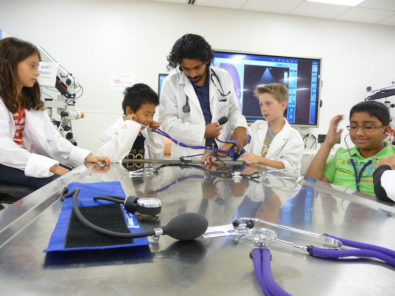
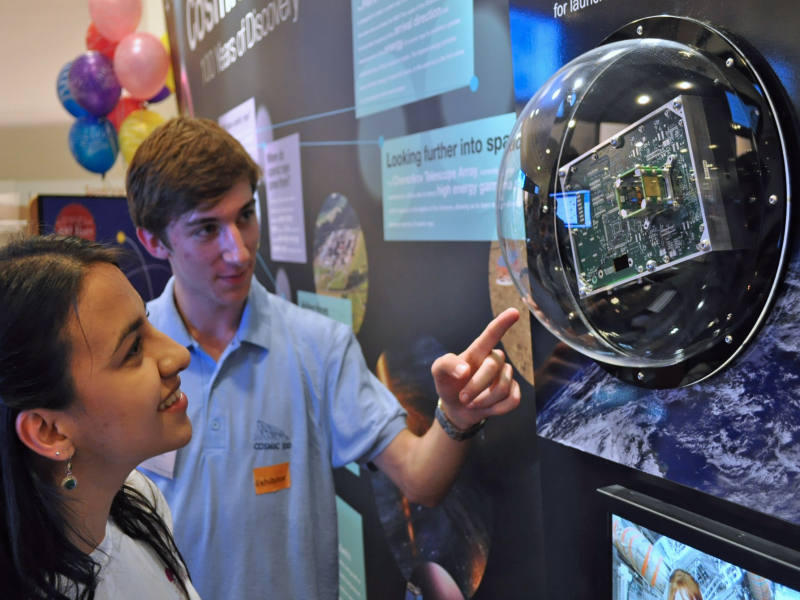

Knowledge helps to make ourselves better, helps to make the world better. But unfortunately, we don't know so much YET that, they wouldn't be able to make use of the knowledge for evil purposes. We can say "only" so much yet now, everybody's own individual responsibility, and his enormous individual responsibility, how decides how: chooses the light or the darkness. Today yet - unfortunately - it is possible to make a choice. Although we know that it is real knowledge, the light, and the evil, the darkness are in an antagonistic contrast with each other. There is "no" trouble with this. The trouble is that, we can be in such circumstances, that it demands almost superhuman effort for us that we remain men, true men, the light, knowledge, the simple soldiers of the affection. That's why everyone has a huge responsibility in that, how to decide, what to choose. Without exception, everyone's decision matters a lot. Not "just" for her own fate, but for the fate of all of us too.
University of Manitoba

The CERN Accelerator School

Study Medicine in Europe
Milky Way: Our Galactic Home

Higgs boson